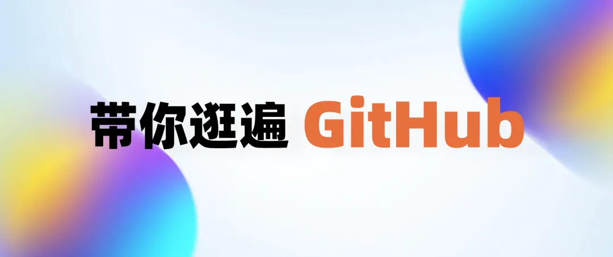

这个 AI 音乐播放器开源了！

melodisco 是一个创新的AI音乐播放器，它利用先进的机器学习算法来分析和理解音乐，从而为用户提供个性化的音乐推荐和播放体验。
这个项目不仅能够学习用户的听歌习惯，还能够根据用户的情绪和环境智能推荐音乐。已经收录了 30 万首 AI 歌曲。
开源地址：https://github.com/all-in-aigc/melodisco

BlockNote 一个基于 React 的富文本编辑器，它基于 Prosemirror 和 Tiptap 构建，提供了类似 Notion 的区块化编辑体验。
用户可以轻松地添加、移动和修改文本、图片、列表等元素，实现高度自定义的内容创作。
开源地址：https://github.com/TypeCellOS/BlockNote
① 区块化编辑：BlockNote 采用区块化编辑方式，使得内容的组织和编辑更加直观和灵活。
② 高度可扩展：基于 Prosemirror 和 Tiptap，BlockNote 允许开发者根据需要添加新的功能和扩展，打造个性化的编辑体验。
③ 丰富的API：提供了丰富的API，方便开发者进行二次开发和集成。
历史盘点
地址：https://github.com/Wechat-ggGitHub/Awesome-GitHub-Repo


暂无介绍....
延伸阅读:
暂无内容!